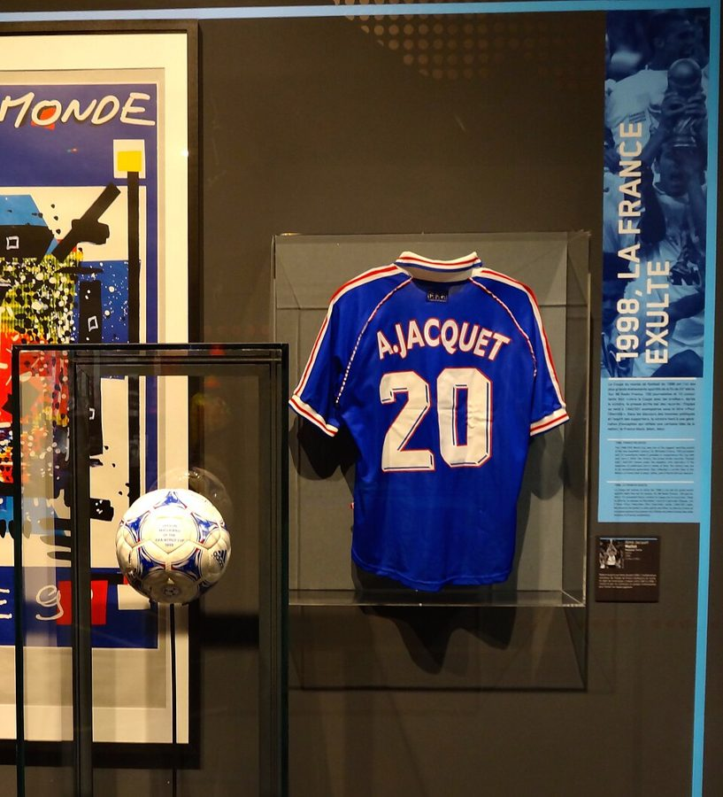
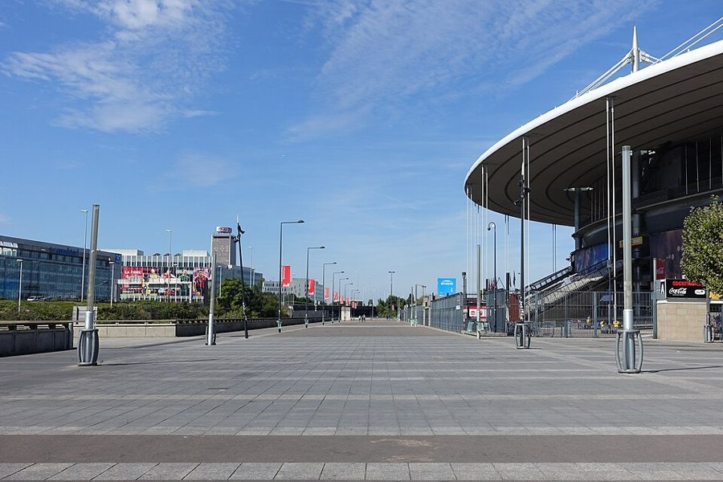
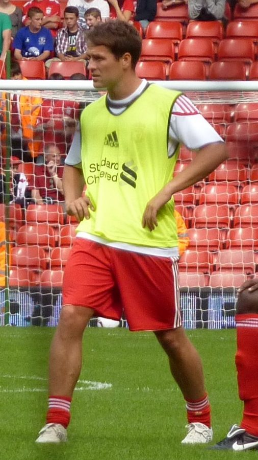
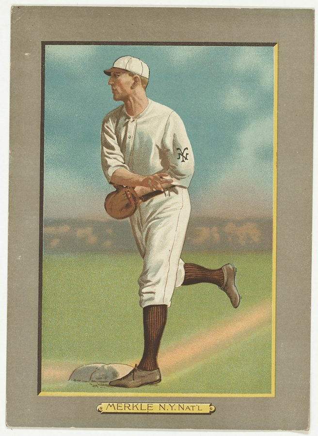
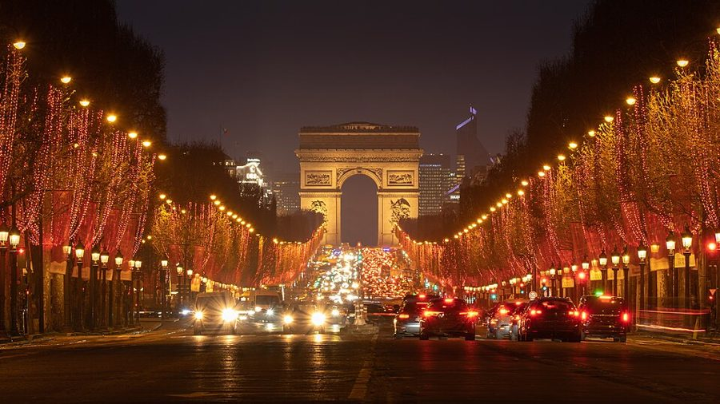

这一篇在做什么
1998 年夏天，世界杯在法国举行。作者给自己派了个任务：一场不落地看下去，弄明白全世界都爱的这项运动，为什么很多美国球迷要被逼着才肯看完。全篇三节：§1 是一个美国人一条条挑足球的毛病，顺带写了马赛的英格兰足球流氓；§2 他换个心态再看，口气一点点变了；§3 是法国夺冠那一夜的巴黎街头。读的时候抓两条线：作者对足球的看法怎么转向，和他一路拿来对照的美国体育。

1998 年世界杯决赛用过的球（左），2014 年在一次展览中。中间那件球衣印着当年法国队主教练 Aimé Jacquet 的名字，展板上写着「1998，法国狂喜」。Liondartois，CC BY-SA 4.0，维基共享资源 读之前：这篇的来历
这一篇是边看边写的：§1 用现在时说世界杯「6 月 10 日开幕，一直踢到 7 月 12 日」，§2 末尾作者还在等法国对意大利那一场（7 月 3 日的四分之一决赛），§3 则写于法国夺冠之后。它是第四部分「描绘世界的机器」的第一篇。前一篇（第 15 篇）作者给三岁的 Luke 编棒球故事，怕他在卢森堡公园里长成一个顶头球的欧洲孩子；后一篇（第 17 篇）写左岸的 Balzar 饭馆。这时一家人在巴黎住了快三年，Luke 快四岁。作者少年时在伦敦住过、踢过球，太太 Martha 是加拿大人，这两点在文中都派上了用场。
全世界都爱、很多美国人觉得闷的足球，到底在给人看什么？一个美国人看完一整届世界杯，能不能看懂？
读的时候带着这几个问题。不用先找答案，读完回来对照「检查一下理解」。
作者挑足球毛病时用的是什么标准？这个标准本身有没有问题？§1
英格兰朋友那句反问之后，作者看球的方式变了什么？§2
「零比零是人生的比分」，这句话是在夸足球，还是在损足球？§2
夺冠那一夜，作者觉得真正赢了的是什么？他对「多种族的球队改变法国」抱多大希望？§3
这一篇的路线
这一篇不是「小事—大事」来回跳，而是一次看法的转向，分三段走。§1 像一份起诉书：从开幕的巨人游行说起，一条条数足球的毛病，每数一条就拿一项美国运动来比，最后落到马赛的足球流氓。§2 场景换到街头、威尼斯的酒吧、电视前，一场球比一场写得长，美国体育反过来显得刺耳。§3 时间跳到夺冠那一夜，球几乎不见了，写的是街上的人，和法国怎么看自己。读译本时最容易在 §2 中段觉得「怎么突然讲起人生」：那是他把 §1 数过的毛病重新解释了一遍。下面这张图把三条线摊开。
街头
赛场
美国
体育
§1
§2
§3
巨人游行
马赛的流氓
威尼斯酒吧
喇叭和彩脸
香榭丽舍
防守占上风
假摔和点球
朋友的反问
法国对巴拉圭
英格兰对阿根廷
球员的出身
篮球改规则
NBA 录像
看不见冰球
本站示意图。从左到右是阅读顺序，虚线是原书的分隔。橙点是街头和人群，蓝点是赛场上的事，绿点是作者拿来对照的美国体育。§1 美国体育是尺子，§2 末尾这把尺子自己出了问题，§3 镜头整个转到街上。 作者落在哪： 作者没有说自己被说服了，他只是换了个看法：足球不是拿来享受，是拿来经受的。它像人生，不公平、闷，进球少得可怜，所以一点小胜利也值得狂喜。夺冠那夜他看到的胜利是混乱：巴黎难得乱成一团。至于多种族球队能终结勒庞，他认为大概不会。
分节地图
原书这一篇有两处分隔，分成三节。每一节的粗体是读译本时认得出的场面；下面的斜体是英文这一节开头的几个词，打开电子书搜它就能跳到那里。读完一节打个勾。
四个充气巨人走过巴黎，马赛的足球流氓约 2200 词 The World Cup soccer tournament got … 一个美国人挑足球的毛病。留意他每数一条，拿来比的是哪项美国运动。 穿苏格兰裙的律师，英格兰点球输给阿根廷约 1500 词 Despite the reports of violence from … 换个心态看球。留意朋友那句反问之后，口气在哪里转了。 夺冠夜，从法兰西学院走到香榭丽舍约 800 词 Although France didn’t win the World … 球几乎不见了，写街上的人、球队的出身和勒庞；留意最后一幕的灯光。
背景：作者默认你知道的事
按在书里出现的顺序排，标题前是节号。
§1 1998 年世界杯和开幕前夜的巨人1998 年是法国第二次主办世界杯（第一次是 1938 年），也是参赛队第一次扩到 32 支。开幕战前一天，6 月 9 日，巴黎街头上演了一场几个小时的游行：四个约 20 米高、可以活动的巨人，分别代表欧洲（Romeo）、美洲（Pablo）、亚洲（Ho）和非洲（Moussa），从城里几处地标出发，走到协和广场会合。主场是为这届世界杯在巴黎北郊圣但尼新建的法兰西体育场（Stade de France）。它的名字是怎么定下来的，第 5 篇 §1 讲过。

法兰西体育场，2016 年。开幕战（巴西对苏格兰）和决赛都在这里踢。Guilhem Vellut，CC BY 2.0，维基共享资源 §1 给不看球的人：点球、金球、点球大战防守方在本方罚球区（书里叫 the area）里犯规或手球，对方就得到一个点球（penalty）：在 11 米外单独面对守门员射门，多半能进，书里说它「基本上是白送一球」。淘汰赛 90 分钟打平就加时；1998 年用的是「金球」制，加时里谁先进球谁赢，比赛当场结束，§2 法国对巴拉圭就是这样结束的。加时还平，两队轮流罚点球定胜负（penalty shoot-out），作者叫它足球的「自我戏仿」。乌龙球（own goal）是把球弄进自家球门。
§1 「别的运动都改了规则」作者拿来比的都是美国体育：NBA 在 1954 年引进 24 秒进攻时限；他说从 Erving 到 Jordan 的年代，裁判对走步越吹越松，这是他的观察（书里自己加了 it seems），不是成文的改规则。书里说足球甘心过「零比零」的日子；不过足球也改过规则：1990 年世界杯被批评太沉闷之后，国际足球理事会从 1992 年起禁止守门员用手接队友故意踢回的球；1993 年起国际足联试行金球制，也是为了鼓励进攻。
Julius Erving、Michael Jordan Julius Erving, Michael Jordan 两代 NBA 巨星，前者 1970–80 年代，后者 1980–90 年代。作者用他们给篮球的年代断代。
兔子安斯特朗 Rabbit Angstrom John Updike「兔子」系列小说的主人公，高中时是篮球明星。作者说只有这个小说人物「正式」注意到了走步的事，是玩笑。
Emmitt Smith Emmitt Smith 美式橄榄球达拉斯牛仔队的跑卫。作者说罗纳尔多那个假动作，他一场比赛要做三次，背上还挂着几个大块头。
Mario Lemieux Mario Lemieux 匹兹堡企鹅队的冰球巨星，1993 年初查出霍奇金淋巴瘤，做完最后一次放疗当天就回到赛场。
§1 书里点名的球员作者点名的球员不少，这里只列读起来需要知道身份的几位。书里说，很多人都指出法国队员多数「不是法国血统」，这件事 §3 还要再谈。

Michael Owen，2010 年 9 月在利物浦主场、老队友 Jamie Carragher 的致敬赛前热身，比这届世界杯晚了十二年。Helen Bromley，CC BY 2.0，维基共享资源
Ginola、Gascoigne David Ginola, Paul Gascoigne 两位以灵气出名的进攻球员，都没进 1998 年本国的名单。前者是法国人，在英格兰热刺队踢球；后者是英格兰人，酗酒出名，赛前被主教练从名单里拿掉，所以作者说他效力于「随便哪家开着门的酒馆」。
Roberto Baggio Roberto Baggio 意大利前锋。小组赛对智利，他把球踢到对方后卫手上，换来点球，扳平了比分。
罗纳尔多 Ronaldo 巴西前锋，当年 21 岁，已是世界最出名的球员。
Michael Owen Michael Owen 利物浦前锋，当年 18 岁，是英格兰队里最年轻的一个。§2 对阿根廷那个长途奔袭的进球让他一夜成名。
David Beckham David Beckham 英格兰中场，当时和辣妹合唱团的 Victoria Adams（Posh Spice）订了婚。对阿根廷下半场一开始被红牌罚下。
齐达内 Zinedine Zidane 法国队的核心，父母是阿尔及利亚移民。决赛用两个头球打进两球。
§1 英格兰的足球流氓1970–80 年代，英格兰的足球流氓（hooligans）闹得全欧洲闻名；1985 年布鲁塞尔海瑟尔球场惨案后，英格兰俱乐部被禁止参加欧洲赛事五年（利物浦六年）。1998 年 6 月 15 日，英格兰在马赛对突尼斯，从比赛前两天到比赛当天（6 月 13 日至 15 日），英格兰球迷和突尼斯球迷、当地北非裔青年在海边一带连续冲突。作者说暴徒多是邮政工人，这是书里的说法（他用了 apparently），本站没有核实。《猜火车》（Trainspotting）是 1996 年的英国电影，写爱丁堡一群吸毒的年轻人。
§2 英格兰对阿根廷1998 年 6 月 30 日，圣艾蒂安，十六强淘汰赛。两国之间有旧账：1982 年的马岛战争，1986 年世界杯马拉多纳的「上帝之手」。这场 2 比 2，英格兰点球大战 3 比 4 出局。书里写的几个场面都对得上：开场不久阿根廷获点球，Owen 被绊倒换回一个点球，又独自带球进了一球；Beckham 倒地时踢了对手一脚被罚下；英格兰一个角球进球被判无效；最后 Batty 的点球被扑出。
§2 Merkle 的大错和 Denkinger 的误判美国棒球迷都知道的两次「冤案」。1908 年 9 月，纽约巨人队对芝加哥小熊队，年轻的 Fred Merkle 在本该决胜的一击之后没有跑去踩二垒，这一分被判无效，比赛记为平局，赛季末加赛，巨人队丢了国家联盟冠军。第 15 篇里作者给 Luke 编的「菜鸟」故事就设在 1908 年，§3 他还专门翻书查了这个赛季和 Merkle 的大错。1985 年世界大赛第六场，一垒裁判 Don Denkinger 把明明出局的打者判为安全上垒，圣路易红雀队这一场被逆转，第七场又输，丢了冠军。

Fred Merkle 的棒球卡，1911 年，那时他仍在纽约巨人队。American Tobacco Company，公有领域，维基共享资源 §3 夺冠那一夜1998 年 7 月 12 日晚上 9 点开球，法国 3 比 0 胜巴西，齐达内两个头球，Petit 在补时又进一球。书里说「快到午夜」才赢，是随口的说法：9 点开球、没有加时的比赛，踢不到午夜。据拉鲁斯百科，赛后一百五十多万人涌上香榭丽舍大街。作者那条夜路：从塞纳河左岸的法兰西学院（Institut de France）过艺术桥（pont des Arts），穿过卢浮宫的方形中庭和杜乐丽花园，一路走到香榭丽舍。§3 说男人们大概记着 1944 年：那年 8 月巴黎解放，街上的人拥抱亲吻进城的士兵。
艺术桥和桥头的法兰西学院（圆顶），2013 年夜景。作者夺冠夜的散步从这里开始，他说这是「世界上最美的一段路」。Henry Marion，CC BY-SA 2.0，维基共享资源
§3 「黑白阿拉伯」和勒庞这支法国队的成员出身各异：齐达内是阿尔及利亚移民的儿子，Lizarazu 是巴斯克人，Desailly 生在加纳，Karembeu 来自南太平洋的新喀里多尼亚。当时媒体管他们叫 black-blanc-beur（黑、白、北非阿拉伯裔），套的是三色旗「蓝白红」的说法。勒庞（Jean-Marie Le Pen）是极右政党国民阵线（Front National）的创始人和领袖，1996 年欧洲杯期间就说过，把外国来的球员叫作法国队「有点人为」，还挑剔他们不唱《马赛曲》；书里说夺冠后他又把胜利揽到自己身上。
勒庞，2007 年国民阵线在巴黎的集会上，离这一篇写的夏天九年。Manuel，CC BY-SA 2.0，维基共享资源
词与短语
只收中文译文多半传不出原味的地方：熟词生义、反话和挖苦、典故、夹在英文里的法文。读译本读到觉得别扭、不知道作者在说什么时，来这里找那一节的；斜体小字是原句里的几个英文词，在电子书里搜它就能找到原文。
§1 四个充气巨人走过巴黎，马赛的足球流氓
allegorical masque
… seventeenth-century-style allegorical masque, with music and …
寓意假面剧
masque 是 17 世纪欧洲宫廷里的一种演出，歌舞加朗诵，角色多是「美德」「和平」这类抽象概念。拿它形容世界杯开幕游行，又隆重又有点迂。
the Self and the Other
… the Self and the Other; the giants …
自我与他者
大写的 Self 和 Other 是法国哲学和学院理论的行话。作者在笑这场游行的主题太玄：几个巨人在巴黎街头醒来，从彼此身上找到「自我」。
hard put
… television were hard put to find something …
很难（找到话说）
be hard put to do 是「做某事很吃力」，和 put（放）的本义无关。巨人走得太慢，解说员没话可说，只好讲这项技术也能用在军事上。
crack
… need of a crack synchronized team …
精锐的
crack 作形容词是「一流的、精锐的」，常说 crack troops。北约要是需要一支「精锐的」慢吞吞充气娃娃部队，找法国准没错：一本正经的挖苦。
tidy talking
… the opposite of trash talking—tidy talking …
「干净话」
trash talking 是美国体育里赛场上骂人、挑衅的垃圾话。作者顺手造了个反义词 tidy talking，说英国少年踢球时满嘴客客气气的评语。
Oh, unlucky!
… everyone cried, “Oh, unlucky!” By the end …
哎，可惜！
英国人安慰队友的口头禅，意思是「不是你的错，运气不好」。和前面的 brilliant（漂亮）、useless（不行）、rubbish（烂）一样，都是英式学校操场上的词。
Thoughtful ball
… “Thoughtful ball,” a commentator on the …
有想法的一脚传球
BBC 解说员夸传球的说法。thoughtful 平常是「体贴、深思的」，用在球上，像在夸一个懂事的学生。
end-of-term reports
… This isn’t sportswriting. It’s end-of-term reports.
期末成绩单上的评语
英国学校每学期末给家长的书面报告，老师逐项写评语。作者引了几句英国报纸的球评，说那腔调就像老师在写「该生聪明但懒散」。
Nil-nil
… in Beckett: “Nil-nil. One-one. Two-one. …
零比零
nil 是英式英语报比分时的「零」，美国人说 nothing。一串比分念下来，被作者比作贝克特剧中那种起起落落、毫无希望的独白。这个词 §2 还要变成全篇的关键词。
fritter away
… then fritter away into desultory shin kicking …
一点点耗散成……
fritter away 原指把钱或时间零零碎碎浪费掉。比赛开头还有劲，接着就散成了有一脚没一脚的踢小腿；作者又补一刀：像《华尔街日报》的社论。
twenty-four-second clock
… before the coming of the twenty-four-second clock …
24 秒进攻计时
NBA 1954 年引进，进攻方 24 秒内必须出手，篮球从此不再能靠拖时间取胜（见「背景」）。
Rabbit Angstrom
… only Rabbit Angstrom has officially noted.
兔子安斯特朗
Updike「兔子」系列的主人公，高中时是篮球明星（见「背景」）。说一个小说人物「正式注意到」，是在笑篮球界对走步心照不宣。
scarcity economy
… accept the scarcity economy—all those nil-nil draws …
匮乏经济
经济学的说法，指东西短缺、人人只能将就的经济。这里短缺的是进球。
like Eskimos
… and just live with it, like Eskimos.
像爱斯基摩人那样
意思是在极地那样匮乏的环境里认命过日子。Eskimo 这个称呼现在不这么说了，多改称因纽特人（Inuit）。
whatever pub is open
… of England and whatever pub is open …
随便哪家开着门的酒馆
前面 Ginola 后面跟的是俱乐部名（热刺），到 Gascoigne 这里换成了酒馆：挖苦他酗酒。
an indecent one
… is to get an indecent one: to …
一个不体面的（机会）
接着前一句的 a decent chance（像样的机会）玩文字游戏：既然像样的射门机会没有，就去骗一个不像样的，也就是点球。
saved the Italians’ pancetta
… Baggio saved the Italians’ pancetta by smoking …
救了意大利人一命
英语成语 save someone’s bacon 是「帮人脱险」。对象是意大利人，作者就把 bacon 换成意大利培根 pancetta。
get breathed on hard
… the ball, get breathed on hard, and …
被人用力「呼了一口气」
意思是几乎没被碰到。后面一长串（像中了狙击手的枪、讨吗啡、队友捶额头）都是在夸张地模仿假摔。
buys
The referee buys this more often than …
信了
buy 在口语里是「相信（一套说辞）」，常说 I don’t buy it。裁判「买账」的次数比你想的多。
did-he-fall-or-was-he-pushed
… the postgame did-he-fall-or-was-he-pushed argument …
是自己摔的还是被推的
这句话像验尸时问的问题：是失足摔下去的，还是被人推下去的。这里先用来说假摔，§2 末尾作者还会再用一次，那时多了一层意思。
estimable
… Rob Hughes, the estimable soccer writer for …
可敬的
estimable 在这里不是「可以估算的」，是「值得敬重的」。客气的夸奖，接下来却引了他一段把三秒钟写成伯罗奔尼撒战争的文字。先抬一下再引原话，多半带点挖苦，要读者自己看出来。
the Kitchen
… at the Kitchen, it was the rule …
「厨房」（纽约的先锋艺术空间）
纽约的一个实验演出场地，Laurie Anderson 这样的行为艺术家早年在那里演出过。作者说足球评论员和艺术评论家一样饿坏了，有一点意思就捧成天才。
game of Risk
… out of some fractured game of Risk …
《战国风云》棋盘游戏
Risk 是一种在世界地图上攻占国家的桌游。丹麦对沙特、克罗地亚对日本，像一盘下乱了的 Risk。
a shining morning face
… tiny boy with a shining morning face …
早晨光亮的小脸
出自莎士比亚《皆大欢喜》里「人生七个阶段」那段：背着书包、脸蛋光亮、不情愿上学的小学生。用来写 18 岁的 Owen。
off the bench
… only eighteen and just off the Liverpool bench.
刚从利物浦的替补席上来
bench 在体育里是替补席，off the bench 是替补出场。意思是他在俱乐部也才刚刚踢上主力。
functionary logic
… they see the functionary logic of this …
公务员式的道理
functionary 是小官员、办事员。法国人怀念有灵气的球星，却也承认这支勤恳、聪明、不出彩的球队有它的道理。语带调侃。
major-league experience
… with no major-league experience, made his …
顶级联赛的经验
major league 是美国棒球的说法。作者给喀麦隆球员套上美国体育的词，美国读者一看就懂：一个无名小将。
deep bench
… of England’s having a deep bench.
替补阵容厚
美国体育的说法，夸一支队伍替补也很强。用在足球流氓身上：最凶的那批被拦住了，「替补」照样能上。英格兰队本身可没这本事，这是双重挖苦。
Lager louts
“Lager louts” and “hooligans” sound vaguely quaint …
喝啤酒闹事的小子
英国小报的说法，lager 是淡啤酒，lout 是粗野的人。作者说这些词听起来有点古雅可笑，掩盖了真实的凶残。
Trainspotting pride
… a kind of Trainspotting pride that …
《猜火车》式的骄傲
《猜火车》写一群不肯过体面生活的年轻人（见「背景」）。作者推测（用的是 maybe、possibility），有些英国人带着左派情绪，暗暗为流氓得意：至少他们不是商人。
what is it about mail?
… postal workers (what is it about mail?) …
邮政这行到底怎么了？
美国有 going postal 的说法，「气疯了、要动手」，来自 1980–90 年代几起邮局职员枪击案。作者多半在借这个美国笑话。
§2 穿苏格兰裙的律师，英格兰点球输给阿根廷
but lawyers
… lawyers from Hong Kong, but lawyers.
可终归是律师
作者以为会听到苏格兰球迷的战吼，结果对方客客气气说「能和巴西踢是荣幸」。原来是香港来的苏格兰律师：是苏格兰人，可终归是律师。
esprit
… talked about the Brazilian esprit, and then …
（法文）灵气、精神
作者转述两个苏格兰律师谈巴西队，用了法文词 esprit；他们接着又用标准的法语吩咐司机：这哪像来闹事的球迷。
eighth-finals
… With Italy into the eighth-finals (eighth-finals!), …
十六强（「八分之一决赛」）
作者这时在意大利，这是直译意大利文 ottavi di finale（法文也叫 huitièmes de finale）。美国人只说 round of 16，作者显然觉得「八分之一决赛」这个叫法好笑，括号里又喊了一遍。
ITALIA PADRONE!
… bursting with pride, ITALIA PADRONE! read one …
（意大利文）意大利称王！
padrone 是主人、老板。作者自己译成 Italy Rules。
blue chain
… the famous “blue chain.” But this …
「蓝色锁链」
意大利队穿蓝色球衣（人称 Azzurri，蓝衣军团），以层层设防出名；意大利的防守打法有个名字叫 catenaccio（门闩）。作者说这是全届最闷的防守打法之一，意大利人却毫不在乎。
go to penalties
… and then “go to penalties,” the shoot-out …
进入点球大战
英式足球行话。作者加了引号，是在学英国人的说法。
result
… draw wasn’t a “result” they would settle …
（能接受的）好结果
英式足球用语里 get a result 是「拿到想要的结果」，不一定是赢。对巴拉圭来说零比零不是「凑合的结果」，而是梦寐以求的全部。
a traditionally French-sounding name
… (a traditionally French-sounding name) stumbled a ball …
（一个听上去很传统的法国名字）
接着 §1 说法国队员多有「异国」名字。偏偏是名字地道法国的 Blanc 打进制胜球，括号里一句冷笑话。
une épreuve de vérité
… test of truth—une épreuve de vérité—for …
（法文）真理的考验
法国解说员说一场 NBA 总决赛是爵士队的「真理的考验」。法国解说员说一场篮球也用这种大词，作者原样照录。
like eating whipped cream straight
… too much, like eating whipped cream straight.
像直接挖奶油吃
straight 是「不加别的、直接」，像 drink whisky straight。饿了一周进球，再看篮球满场得分，腻得像空口吃奶油。
blazer and beanie
… be wearing a blazer and beanie, got …
学生制服外套和小圆帽
英国私立学校学生的打扮。说 Owen 小平头、娃娃脸，像个该去上学的学生。
the death scene from Camille
… acted out the death scene from Camille …
《茶花女》的临终一幕
Camille 是《茶花女》在英语世界通行的剧名和片名，女主角死得缠绵悱恻。Owen 被绊倒后倒地的样子，像在演这一幕。
a performer short
… England, like the Spices, a performer short.
少了一个上场的
Beckham 被罚下，英格兰少一人；他的未婚妻所在的辣妹合唱团也正好少了一人（1998 年 5 月 Geri Halliwell 退团）。一句话两头挂。
pots a goal
… nobody wins and nobody pots a goal.
进一个球
pot 本义是罐子，在台球里是「打进袋」，英式口语也用来说进球。
Merkle’s boner
… in baseball—Merkle’s boner or Denkinger’s call—hurts …
Merkle 的大错
boner 在老派美国俚语里是「愚蠢的大错」，这件事在棒球史上就叫这个名字（见「背景」）。这个词今天还有不雅的意思，读时别想歪。
We’re due
“We’re due,” “It’s our turn,” “Wait till …
也该轮到我们了
due 是「到期、该来了」。美国球迷输了以后的口头禅，和「明年再来」一样，都透着乐观。
after the fall
… soccer takes place after the fall.
在堕落之后
the Fall 是《圣经》里亚当夏娃被逐出伊甸园。这里接着前一句的 paradise，又呼应 §1 那个「自己摔的还是被推的」：作者说这是最古老的问题。fall 一词两义（堕落、摔倒），中文很难两头保住。
a purebred Canadian
… called in Martha, a purebred Canadian, and …
纯种加拿大人
purebred 本来说狗和马。玩笑：加拿大人从小看冰球，她要是也看不见冰球，那就不是作者眼睛的问题了。
§3 夺冠夜，从法兰西学院走到香榭丽舍
crise
… lose, the crise was already over.
（法文）危机
法国人爱说「危机」：经济危机、信心危机。作者用法文，指法国人那种郁闷的自我怀疑；还没开赛，它就已经过去了。
a champagne occasion
… was that it wasn’t a champagne occasion.
开香槟的场合
字面上说喝的不是香槟，是瓶装水、廉价酒和啤酒；言下之意是这不是体面人举杯的那种庆典，是街上的狂欢。
in best Freddie Mercury English
… sung, in best Freddie Mercury English, by …
用最地道的皇后乐队式英语
Freddie Mercury 是英国皇后乐队（Queen）的主唱，We Are the Champions 是他们的歌。法国队夺冠，人群在总统府花园里唱的却是英国乐队的英文歌。in best … English 套的是「用最标准的英语」，这里的「标准」是 Freddie Mercury。
grand siècle
… the grand siècle itself had gone a …
（法文）伟大的世纪
指路易十四的 17 世纪，法兰西学院、卢浮宫这一带的建筑多是那个时代的气象。作者说连这个庄严的世纪都被狂欢弄得东倒西歪、飘飘然了。
Misrule ruled
… Misrule ruled. A man wrapped in …
「无序」当了家
英国中世纪节庆里有 Lord of Misrule（胡闹之王），狂欢时规矩颠倒。两个词同根，「无序在统治」。
relieving himself
… tricolor was relieving himself against the front …
小便
relieve oneself 是委婉语。身裹三色旗的人对着法兰西学院的墙方便，作者说他「很谨慎，很有团队精神」，但终归是在撒尿。
esprit de corps
… with maximum esprit de corps, but …
（法文）团队精神
字面是「团体的精神」。在这个场面里用，又庄重又滑稽：撒尿也带着集体荣誉感。
Chaud Lapin
… up to “Chaud Lapin”—“Hot Rabbit!” …
（法文）风流鬼
字面「热兔子」，法国口语里指好色、精力旺盛的男人。游戏机测「热情」，最高一档就叫这个，比「卡萨诺瓦」还高。
a memory of 1944
… presumably with a memory of 1944, when …
1944 年的记忆
1944 年 8 月巴黎解放，满街的人拥抱亲吻（见「背景」）。作者说据说那时姑娘们会抱回去，这回没有，不过也没关系。
the Dream Team
… the Dream Team didn’t change black income …
「梦之队」
1992 年巴塞罗那奥运会的美国男篮，第一次由 NBA 球星组成，多数是黑人球员。作者说它没有改变美国黑人的收入，以此说明体育解决社会问题的能力有限。
blandly
… Pen blandly claimed the victory for himself.
若无其事地
bland 是平淡、不动声色。一个嘲笑过这支球队的人，脸不红心不跳地把胜利算到自己头上。
flows downhill, toward the gutter
… nationalism always flows downhill, toward the gutter.
往下流，流进阴沟
gutter 是路边的排水沟，也指社会和道德的最低处。民族主义的逻辑像水一样只往低处走，作者对勒庞的判断全在这个比方里。
bonking the head of
… an unexpected blessing, bonking the head of …
砸在……的脑袋上
bonk 是象声词，「咚」地敲一下。福气不是降临，而是从天上掉下来砸中毫无准备的人，带着卡通片的滑稽感。
all mixed up
For once Paris was all mixed up.
乱成一团，也混在了一起
mixed up 平常是「乱了、搞混了」，这里还有「混合」的意思，接着前面多种族球队的话题。全篇最后一句，两层意思都要读出来（见「值得停下来的句子」）。
后来
这一篇写的是 1998 年夏天。下面接着讲书里两件事后来怎样。每条都写了核对日期，这类内容过一两年就会变。
金球没了，「摔还是被推」有了录像
1998 年和 2002 年两届世界杯都用金球制。2004 年 2 月，国际足球理事会（IFAB）决定把它和后来试行的「银球」一起取消，当年 7 月 1 日起生效，加时赛恢复踢满 30 分钟。2018 年 3 月 3 日，IFAB 把视频助理裁判（VAR）写进规则，同年的俄罗斯世界杯第一次使用：进球、点球、直接红牌和认错人，裁判可以回看录像。作者说英国人要吵好几年的「自己摔的还是被推的」，如今有一部分当场就看录像判了。核对于 2026-10。依据：《洛杉矶时报》2004 年 2 月 29 日报道，IFAB 2018 年 3 月 3 日公告。
「黑白阿拉伯」之后的勒庞
作者说多种族球队夺冠「大概不会」是勒庞的末日。四年后，2002 年 4 月 21 日总统选举第一轮，勒庞以约 16.9% 的得票排第二，压过总理若斯潘，第一次让极右政党的候选人进入总统选举第二轮。5 月 5 日的第二轮，希拉克以约 82% 的得票当选连任。核对于 2026-10。依据：法国宪法委员会公布的 2002 年总统选举结果。
值得停下来的句子
If American sports are played in paradise, soccer takes place after the fall.— §2，倒数第三段的末尾。本站译：如果说美国的体育在乐园里进行，足球就发生在堕落之后。
前半句 paradise 和后半句 the fall 是一对：伊甸园和被逐出伊甸园。the fall 同时是「摔倒」，接着就是那个反复出现的「自己摔的还是被推的」，作者干脆说它是最古老的问题。中文「堕落」保住了《圣经》那一层，丢了「摔倒」那一层；译成「摔倒」又丢了伊甸园。一个词把 §1 的假摔和 §2 的人生观缝在了一起。
For once Paris was all mixed up.— §3，全篇最后一句。本站译：巴黎难得一回乱成了一团。
前面写的是香榭丽舍平日夜里整整齐齐的两列车灯，红的上行、白的下行，这一夜糊成一片粉色。mixed up 既是「乱」，也是「混」：紧接着前面多种族球队和勒庞的话题，红与白搅在一起，暗合人群的混合。For once（难得一回）又暗示巴黎平时太整齐。第 1 篇导言里作者说他的随笔把经历和历史 all mixed up，这里像是给全书方法打了个照面。

香榭丽舍大街和凯旋门，2021 年圣诞期间的夜景，与本书无关。左边一列白色车头灯迎面而来，右边一列红色尾灯驶向凯旋门：这就是 §3 最后一段说的平日夜景，夺冠那一夜它们不见了。Pierre Blaché，CC0，维基共享资源 检查一下理解
先在心里答，再点开。答错的那题，回书里把对应那一节再读一遍。
1.（§1）作者怎么看开幕的巨人游行？他拿它暗示整届比赛什么？ 他半开玩笑：主题玄（自我与他者），走得像蜗牛，电视解说员都找不到话说。他说这种含糊的国际主义象征加上慢吞吞的速度，正好是这届比赛的寓言。
2.（§1）作者说足球的防守太占优势。别的运动怎么应付这个问题？足球呢？ 别的运动明里暗里改规则：篮球放宽走步，橄榄球改规则保护四分卫，棒球动投手丘和外野墙。他认为足球甘心接受零比零，于是进攻的办法变成了骗点球，犯规和惩罚很不成比例。
3.（§1）作者怎样解释英格兰足球流氓为什么除不掉？ 他推测（用的是 maybe）许多英国人半自觉地以他们为荣：左派有反撒切尔的情绪，觉得暴徒至少不是商人；右派有浪漫的沙文主义，觉得去欧陆打外国人是英国传统。
4.（§2）英格兰朋友那句「你凭什么指望它好看？」起了什么作用？ 它让作者意识到，期待娱乐本身可能就是错的。他回巴黎决心「不求娱乐」地看，于是看出巴拉圭人把零比零当成梦想，输了的人哭了，却不绝望，更像松了口气。
5.（§2）看了一周足球再看 NBA 录像，作者有什么感觉？ 篮球得分太多、太吵、太廉价，像直接挖奶油吃；他也头一回注意到比赛最后两分钟故意犯规、叫暂停那种支离破碎的节奏。
6.（§2）看冰球那一段为什么放在 §2 的最后？ §1 里欧洲人说冰球「看不见球」，作者还不服；现在他自己真看不见了，连加拿大人 Martha 也说她从来跟不上。他拿来评判足球的美国标准动摇了，所以接着自问是被旧大陆的球带坏了，还是开了窍。
7.（§3）作者认为多种族球队夺冠的意义在哪里？局限在哪里？ 他说在法国说法语就能觉得自己是法国人，难的是体制上的接纳、进入法国人的自我形象；这些球员这回进去了。但体育解决社会问题的能力有限，他认为这大概不会是勒庞的末日，勒庞还把胜利说成自己的。
用一句话说这一篇，写给一个没读过的人。
精彩回顾
读过又忘了，从这里想起来。挑的是这一篇最值得记住的场面和说法，不按原书顺序；每条后面是节号，想细看就回书里那一节。全书各篇的这一节都收在全书回顾 。
一句话： 一个美国人看完整届世界杯，没学会觉得足球好看，却学会了把零比零看成人生；夺冠那夜，他看见巴黎难得乱成一团。
零比零是人生的比分 作者的转折：足球不是拿来享受的，是拿来经受的。不公平、沉闷、常常白忙，所以一脚好球就值得狂喜。美国体育在乐园里，足球在堕落之后。
§2 球评像期末评语 英国报纸写球员「聪明但倦怠」「固执到近乎自毁」，作者说这不是体育报道，是学期末老师写给家长的评语。
§1 「凭什么要好看？」 作者对英格兰朋友抱怨世界杯不够好看，对方停了一下，反问他凭什么指望它好看。这句话让他换了看球的心态。
§2 冰球也看不见了 作者一直拿冰球笑话足球，看了几周足球再看斯坦利杯，居然看不见那块冰球；加拿大人 Martha 说她从来也看不见。
§2 慢吞吞的巨人 开幕前夜，四个代表四大洲的充气巨人花了四个小时走到协和广场。作者说北约要是需要一支慢吞吞的巨人部队，找法国准没错。
§1 两列车灯不见了 平常夜里从杜乐丽花园望去，香榭丽舍是一红一白两列整齐的车灯。夺冠那夜人车混成一片，灯光糊成粉色：巴黎难得乱了一回。
§3